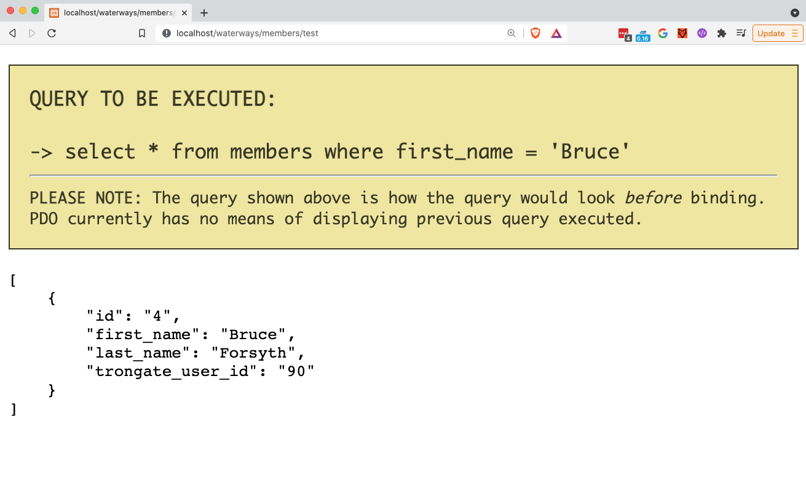

The 'Get Many Where' method is for fetching rows of data from a database table. It accepts the following parameters:
WHEN MATCHING RECORDS ARE FOUND
If matching records are found then a PHP array will be returned where each item on the array represents a row from a database table. Each row, within the array, will be a PHP object.
WHEN MATCHING RECORDS ARE NOT FOUND
If the query fails to find any matching records then an empty array will be returned.
The syntax below shows the simplest Get Many Where example possible. In this example, we are passing in a column name of 'first_name' and a value of 'Bruce'.
$rows = $this->model->get_many_where("first_name", "Bruce");
The code above will produce the following SQL query:
SELECT * from tablename WHERE first_name = 'Bruce'
Below is an example of a Members.php controller file that contains a test() method. Here we're invoking a basic 'Get Many Where' command and then immediately displaying the results using Trongate's json() method:
<?php<br /> class Members extends Trongate {<br /> <br /> function test() {<br /> $rows = $this->model->get_many_where("first_name", "Bruce");<br /> json($rows);<br /> }<br /> <br /><br />Below shows an example of the kind of output that we can expect to see from the above method, when Debug Mode is switched on:

Below is a more advanced example:
$rows = $this->model->get_many_where("type", "Trout", "fish");
The code above would produce the following SQL query:
SELECT * FROM fish WHERE type = 'Trout'